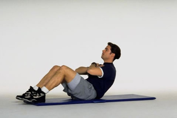

Gym
The gym can be a good place to work on overall aerobic fitness and build muscle strength, or just somewhere to exercise on days when you can't face the cold or the rain.
Gym-based activities include aerobic exercise such as running, rowing or cycling machines, weight training, and classes, such as aerobics or aerobic dance. All ages and fitness levels are catered for and improvements can be measured and exercise programmes tailored to your needs.
Check your instructor is qualified to recognised standards, especially if you're weight training. Incorrect technique can easily lead to injuries or make existing problems worse. For advice, take a look at the Register of Exercise Professionals.
Some gyms can be expensive to join, but council-run facilities often offer a cheaper alternative where you can pay per session rather than shelling out for an annual membership.

© Daniel Ingram, 2011 ~ Site Map
All content within is provided for general information only, and should not be treated as a substitute for the medical advice of your own doctor or any other health care professional. We are not responsible or liable for any diagnosis made by a user based on the content of this website. We are not liable for the contents of any external internet sites listed, nor does it endorse any commercial product or service mentioned or advised on any of the sites. See our Links Policy for more information. Always consult your own GP if you're in any way concerned about your health.